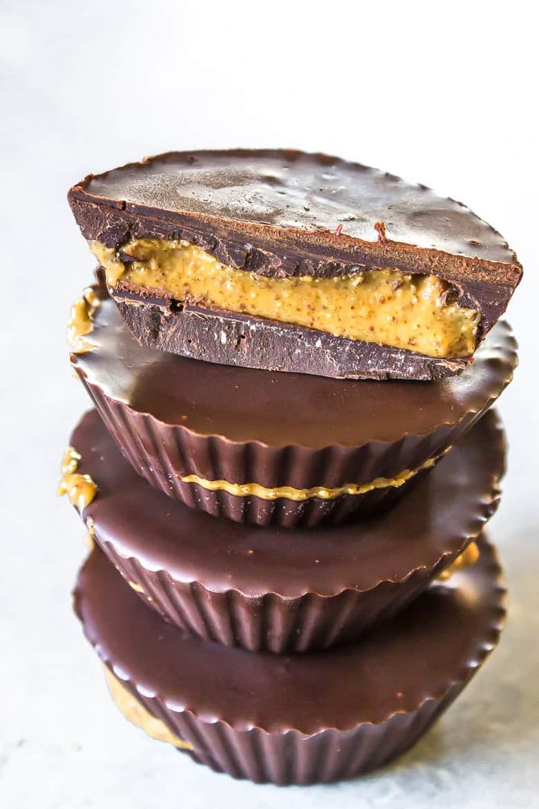

Amazing sugar free carob cups

Description
These Carob Cups taste nearly identical to a dark chocolate peanut butter cup, but without any of the added sugar!
Ingredients
Base
Filling
Instructions
- In a sauce pan over low heat, melt the cocoa butter to liquid form.
- Add the roasted carob/carob powder a little at a time so it doesn't get clumpy, while mixing.
- Gently pour some of the mixture into the bottom of an ice cube tray, cupcake pan, or cup mold and allow them to cool.
- Put a portion of the almond buter on top of the hardened carob and in the center of each mold, making sure it does not touch the edges.
- Pour more of the carob mixture over the almond butter, fully encasing it.
- Finally, allow them to cool and harden, store in an airtight container.